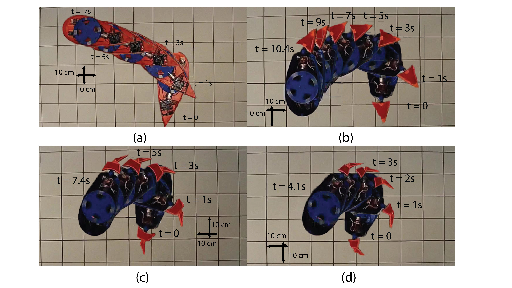
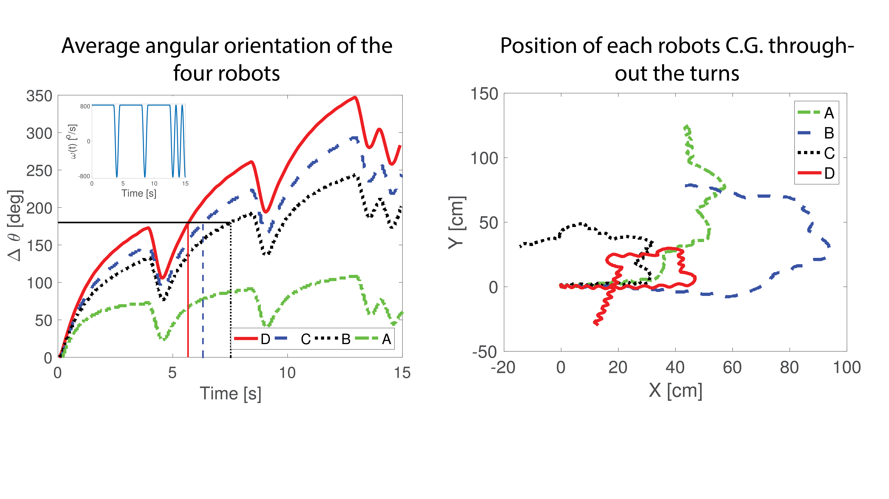
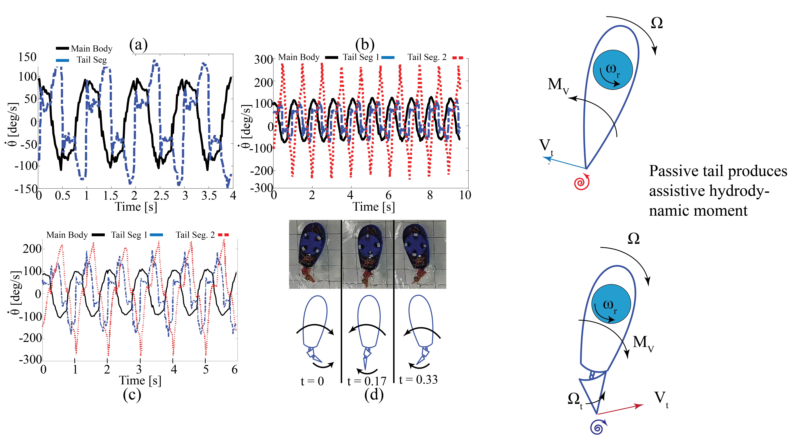
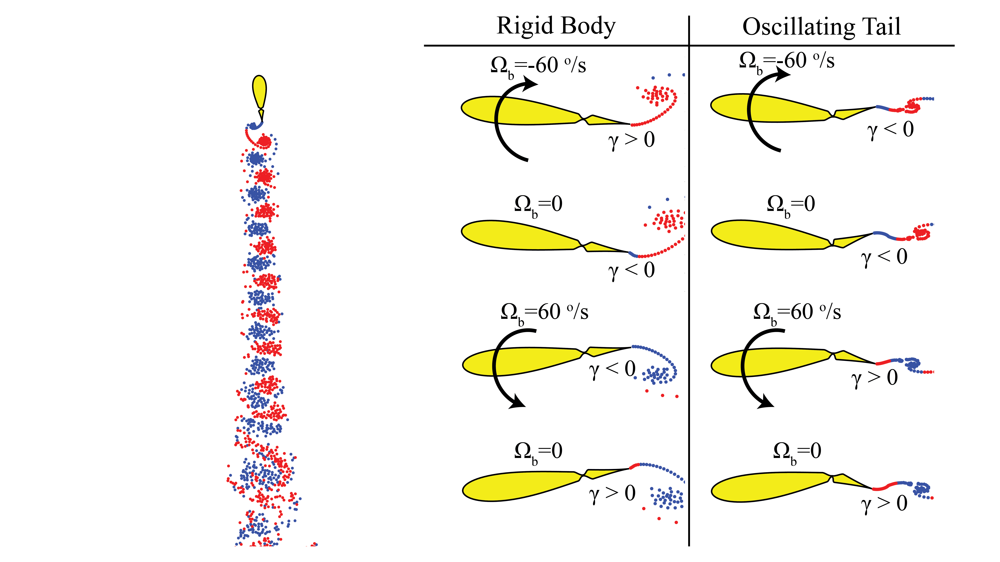
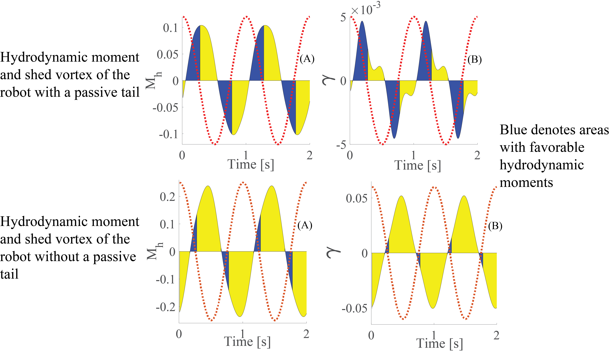

Abstract:
It is known that the passive mechanics of fish appendages play a role in the high efficiency of their swimming. A well-known example of this is the experimental demonstration that a dead fish could swim upstream [1]. However, little is known about the role if any of passive deformations of a fishlike body that could aid in its maneuverability. Part of the difficulty investigating this lies in clearly separating role of actuated body deformations and passive deformations in response to the fluid structure interaction. In this paper, we compare the maneuverability of several fish-shaped robotic models that possess varying numbers of passive appendages with a fish-shaped robot that has no appendages. All the robots are propelled by the oscillations of an internal momentum wheel thereby eliminating any active deformations of the body. Our experiments clearly reveal the significant improvement in maneuverability of robots with passive appendages. In the broader context of swimming robots, our experiments showthat passive mechanisms could be useful to provide mechanical feedback that can help maneuverability and obstacle avoidance along with propulsive efficiency.
Method that has been developed to determine an analogous sleigh model for the swimmer.

Four robots used in the experiments (a) Rigid body robot. (b) Robot with one passive tail. (c) Robot with two passive tail segments. (d) Robot with two passive tail segments
Limit cycle graphs in the velocity space of the swimming foil and the Chaplygin sleigh. Notice that they display similar figure 8 shaped limit cycles.
Method that has been developed to determine an analogous sleigh model for the swimmer.
Method that has been developed to determine an analogous sleigh model for the swimmer.
Method that has been developed to determine an analogous sleigh model for the swimmer.
Method that has been developed to determine an analogous sleigh model for the swimmer.